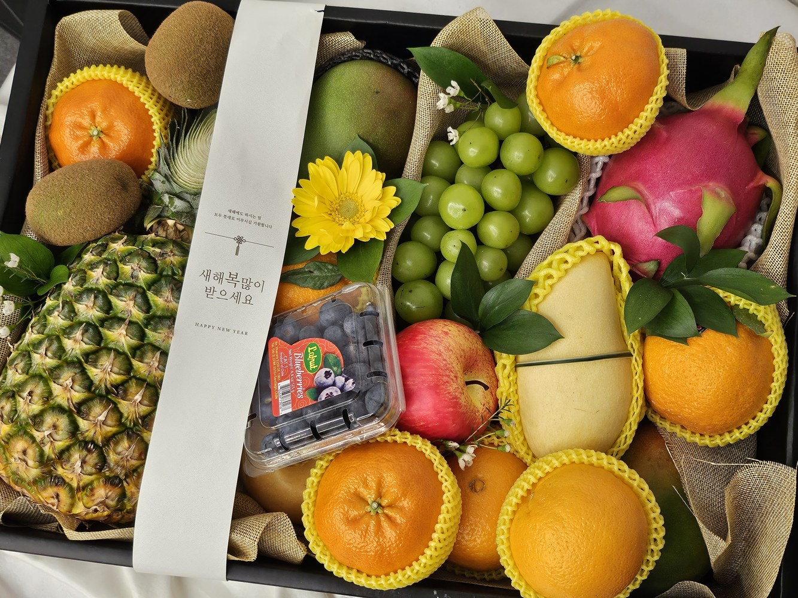

EDUCATION · 2026.05.28
좋아하는 과일을 묻기 전에,
하루를 먼저 묻는 이유
과일코디네이터 교육은 품종 이름을 많이 외우는 수업이 아니라, 사람의 하루에 맞는 질문 순서를 다시 세우는 훈련에 가깝습니다.

누군가 과일을 고르러 왔을 때 우리는 쉽게 이렇게 묻습니다. "어떤 과일 좋아하세요?" 틀린 질문은 아니지만, 이 한마디만으로는 오늘 그 사람에게 맞는 답을 찾기 어렵습니다. 좋아하는 과일이 있어도 지금 먹고 싶은 과일은 다를 수 있고, 익숙한 과일이 있어도 오늘 몸이 받는 식감과 향은 또 다를 수 있기 때문입니다.
대한과일협회가 과일코디네이터 교육에서 먼저 다루는 것은 상품 설명보다 장면 읽기입니다. 아침을 거르고 나온 사람인지, 아이와 함께 먹을 과일을 찾는지, 혼자 사는 집에 둘 양인지, 선물 상자를 열자마자 바로 먹을지. 같은 사과, 같은 참외, 같은 포도라도 이 장면이 바뀌면 좋은 선택의 기준도 함께 바뀝니다.
취향은 결과이고, 질문은 그날의 생활에서 시작됩니다.
그래서 교육 현장에서는 "무엇을 권할까"보다 "무엇부터 물을까"를 더 오래 연습합니다. 과일을 좋아하느냐보다 차갑게 먹는 편인지, 한 번에 많이 먹는지, 향이 강한 것을 괜찮아하는지가 먼저일 때가 많습니다. 이 순서가 바뀌면 추천은 덜 화려해 보여도 실제로는 훨씬 덜 남고, 먹는 사람의 기억에도 더 편안하게 남습니다.
언제 먹는지, 누구와 먹는지, 얼마나 남길 수 있는지. 교육은 이 세 가지를 먼저 묻는 습관을 만들고, 그다음에야 맛과 품종의 언어를 얹습니다.
이런 접근은 판매 기술만을 위한 것도 아닙니다. 집에서 과일이 자꾸 남는 이유를 설명할 때도, 아이가 특정 과일을 반복해서 밀어낼 때도, 선물한 과일이 왜 반가움보다 부담이 되었는지 돌아볼 때도 같은 질문이 필요합니다. 과일을 끝까지 잘 먹게 만드는 힘은 대단한 정보보다 생활에 맞는 맥락에서 나오는 경우가 많습니다.
과일코디네이터는 그래서 정답을 외우는 사람이 아니라 상황을 번역하는 사람에 가깝습니다. 오늘의 피로, 식탁의 인원, 냉장고의 속도, 받는 사람의 감각을 듣고 과일의 맛과 향, 식감과 색을 다시 연결하는 일. 교육이 필요한 이유도 여기에 있습니다. 더 많이 아는 사람이 되기 위해서가 아니라, 더 정확하게 묻는 사람이 되기 위해서입니다.